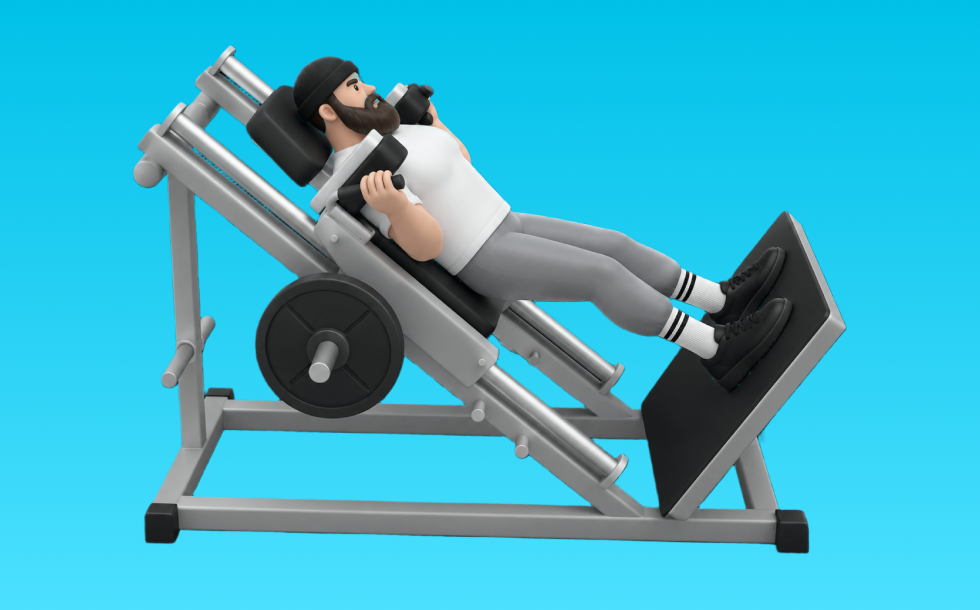

ハックスクワット

ハックスクワットとは、マシンを使って「しゃがんで立つ」動作で脚（大腿四頭筋、臀筋）＋体幹を鍛える種目です。軌道が安定して狙った部位に効かせやすいのが特徴で、背すじを保ってしゃがみ、足で床を押して立ち上がる動作を繰り返します。下半身の筋力・筋量アップが期待できます。
- 対象部位
- 脚
- 器具
- マシン
- 記録形式
- 重量・回数
- 別名
- ハックスクワットマシン
YouTube動画
-
【脚トレ】スクワットが合わない人必見！世界王者が一番好きな『ハックスクワット』を徹底解説
-
【バーベルスクワットと全然違う!?】脚トレの代表種目“ハックスクワット”を徹底解説!!
-
【初心者オススメ】足の位置で鍛えるパーツが変わる！ハックスクワットの攻略方法 【BASEGYM24セミナー/新・バズーカ岡田チャンネル】 #バズーカ岡田
-
【脚トレ】カッコいい脚を作る！ハックスクワット、世界チャンプが丁寧に解説！【山岸秀匡】
-
【足トレ】マシンの使い方 ハックスクワット
-
【有料級】脚が弱い人必見！効かせる天才ボディビル神奈川２位の持田式脚トレがマジで効き過ぎる、、
-
【理論で教えます】大腿四頭筋最強の種目？！ハックスクワット極意解説
-
【ボディビル日本一が完全解説】脚トレには絶対欠かせないキングオブエクササイズ!! スクワットの教科書
-
絶対に脚が太くなる最強種目を横川尚隆が徹底解説！筋肉教祖シリーズ#1
-
ハックスクワット(スミスマシン)の正しいやり方やフォームを解説◎【もも前筋トレ】
-
ハックスクワットマシンの効果について！足の位置やフォームなどを解説
-
【永久保存版】基礎から徹底解説！脚トレの王様「スクワットの教科書」
-
付け根からの張り出しをつくる！〜レッグエクステンション、ハックスクワットアフレコ解説〜
-
【脚トレ】ハックスクワットマシン！足の位置やフォームの解説
-
大腿四頭筋の筋肥大に最も良い種目は？【大腿四頭筋のティアリスト】
-
【魔改造Ver.】岡田狂喜！気持ち良すぎるノーチラスハックスクワット！【サイヤマングレート/新・バズーカ岡田チャンネル】 #バズーカ岡田
-
【筋トレ】ハックスクワットのやり方 | ボディビルチャンピオンが教える自重で脚を鍛える種目 【ビーレジェンド プロテイン】
YouTubeショート
-
新マシン！ハックスクワットの使用方法 #shorts
-
スクワットのフォームが美しすぎる…
-
ハックスクワットで戻すのてこずって苦しむ様子 #shorts #筋トレ #スクワット #脚トレ #あるある
-
スクワットの正しいやり方【筋トレ】
-
ハックスクワットのやり方履き違えてる様子 #shorts
-
正しいスクワットのフォーム
-
ハックスクワットの正しい使い方
-
BULL ハックスクワット使用方法
-
正しいスミススクワットのやり方
-
ハックスクワットの使い方(SHUA)
-
【筋トレ_脚】#shorts #筋トレ #スクワット #100kg
-
【逆に壊れる】スクワット初心者に多い膝を出さない間違ったフォーム #筋トレ #エクササイズ
-
【怪我せず鍛えられる】僕の脚を強くしたスクワットルーティンを紹介します #筋トレ #脚トレ #スクワット #ボディビル #shorts
-
【脚トレ解説】スミス・ハックスクワット #筋トレ解説 #30秒解説 #脚トレーニング
-
こんなスクワットはやめましょう #フィットネス #筋トレ #スクワット
-
ハックスクワット派。みんなは？ #トレーニング #筋トレ #パワーリフティング #脚トレ
-
ヘルニアでもスクワットする理由
-
初心者必見！スミスマシンで行う脚トレ6選詰め合わせ！ #筋トレ
-
V スクワットマシンのコツ！ #ショート
-
みなさんはスクワットどのようにされてますか？今回は持田選手がスクワットを伝授！次はどの種目の解説をやってほしいかコメントしてね！ #筋トレ #volix #トレーニング #ちょこっと惜しい
-
ハックスクワットのやり方｜脚に効かせる手順 #筋トレ #筋トレ初心者 #スクワット
-
浅すぎるスクワットの効果 【世界の筋肉】
動作方法
- 足幅を決め、体幹を固める
- 股関節と膝を同時に曲げて下ろす
- 足裏全体で床を押して立ち上がる
動作ポイント
- 膝とつま先の向きをそろえる
- 胸を落としすぎない
- かかとを浮かせない
ワンポイントアドバイス
- ウォームアップで股関節と足首を動かす
- 高重量の日はセーフティ設定を確認する
目的別回数設定
目的や体力に応じた一般的な目安です。無理のない範囲で調整してください。
- 筋力アップ
- 1〜5回
- 筋肥大
- 6〜12回
- 持久力アップ
- 13〜20回
YouTube動画について
動画はYouTubeの公開情報をもとに表示しています。内容は投稿者によるもので、Biggrによる監修ではありません。
アプリを入手
筋トレやトレーニングの記録はBiggrにお任せください。今すぐ無料で使い始められます。